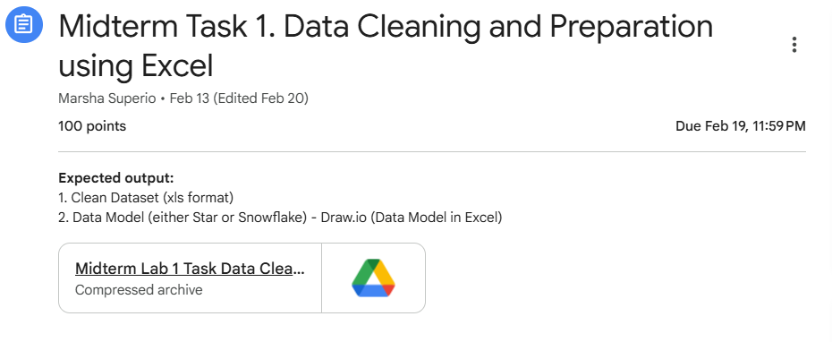
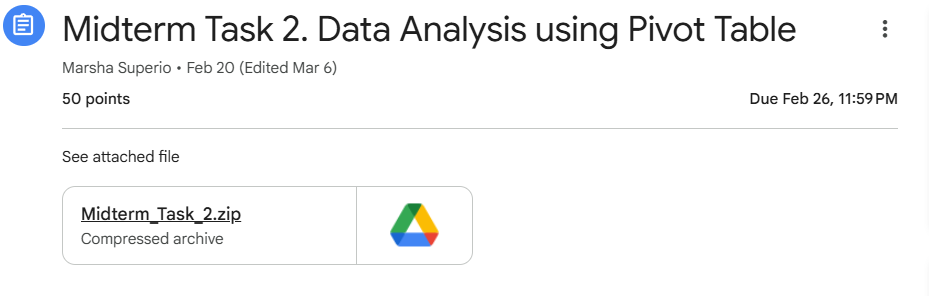

Hello! I am a student from City College of Angeles. This portfolio contains my midterm tasks and projects.
Description: This task focuses on cleaning and preparing raw datasets using Microsoft Excel. It involves identifying and handling missing values, removing duplicates, correcting inconsistencies, and organizing the data into a structured format. The goal is to ensure that the dataset is accurate, consistent, and ready for analysis.

Description: This task involves analyzing data using Pivot Tables in Microsoft Excel. It allows for the summarization of large datasets, identification of patterns and trends, and generation of meaningful insights. Pivot Tables help in organizing data dynamically, making it easier to interpret and support decision-making.

Description: This task focuses on data preparation and modeling using Power Query. It includes extracting, transforming, and loading (ETL) data from various sources into a structured format. The process also involves organizing data into models such as star or snowflake schemas to improve data relationships and analysis efficiency.